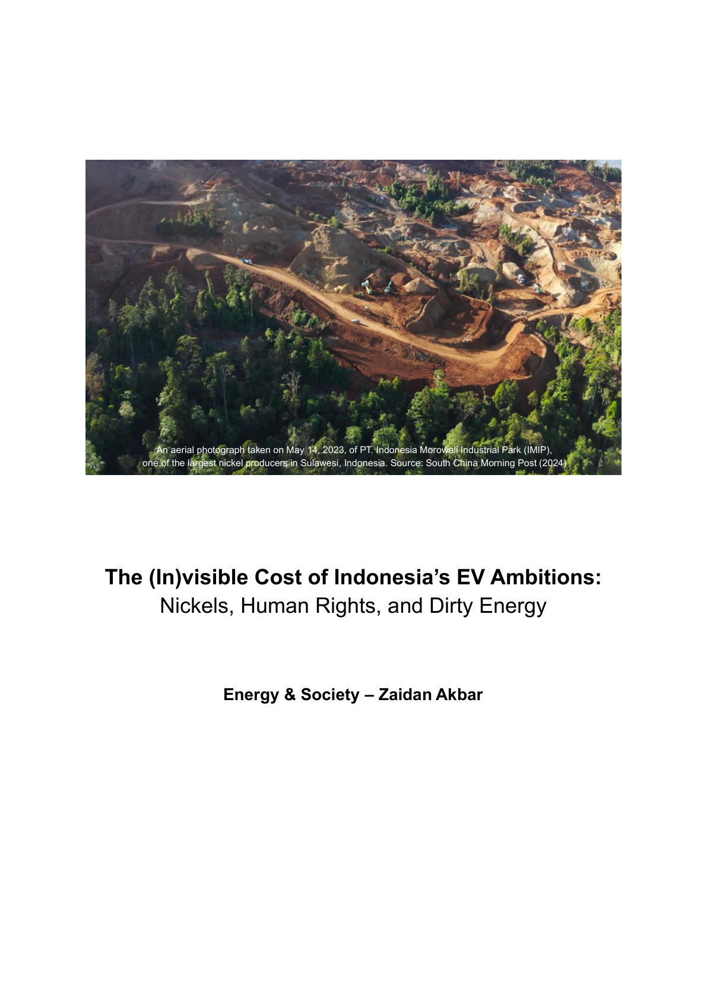

Here is a reflection for developing countries with a strong ambition to boost EV transition, using Indonesia as the case study. Rather than disagreeing between EVs and ICEs, we need to work together in decarbonisation — but with eyes wide open to the hidden costs.
This paper provides another way to view the benefits and costs of decarbonisation. I explored how the energy transition has many downsides along with its good intentions. We need to consider every possibility to ensure the world becomes a better place to live.
What is the meaning of high economic growth if more people are displaced and those bearing the burden don't feel the benefits?
Why a Comprehensive Perspective Matters
Energy sources matter. If EVs are powered by electricity from fossil fuels like coal, the environmental benefits are significantly diminished — even more so if the process of creating the components still uses dirty energy.
The entire energy system. Consider the environmental and social impacts of resource extraction and processing, such as nickel mining for EV batteries in Indonesia.
Energy justice. The energy transition's benefits should be distributed fairly, ensuring vulnerable and marginalised communities aren't left behind or disadvantaged.
A solution working in one region or country may not work in another. Every country needs to develop solutions based on its energy mix, socio-economic conditions, geography, culture, natural resources, technological maturity, existing infrastructure, and policy frameworks.
This paper aims to open our eyes to discussions and analyses, and hopefully can become a key consideration in energy transition and decarbonisation. We need to encourage a deeper examination of the costs and benefits, urging us to consider every possibility for a truly sustainable future for all.
